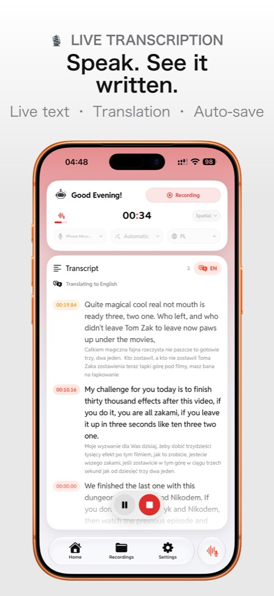
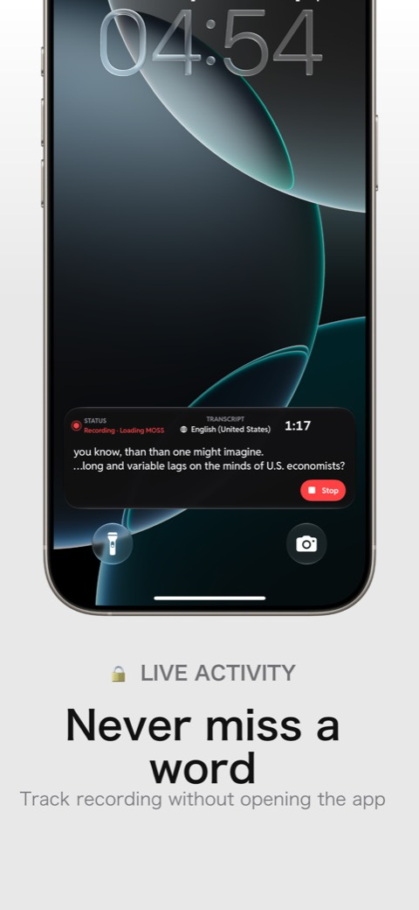
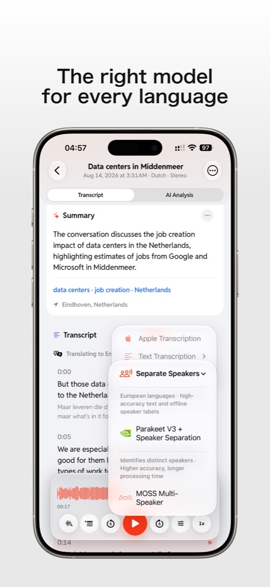
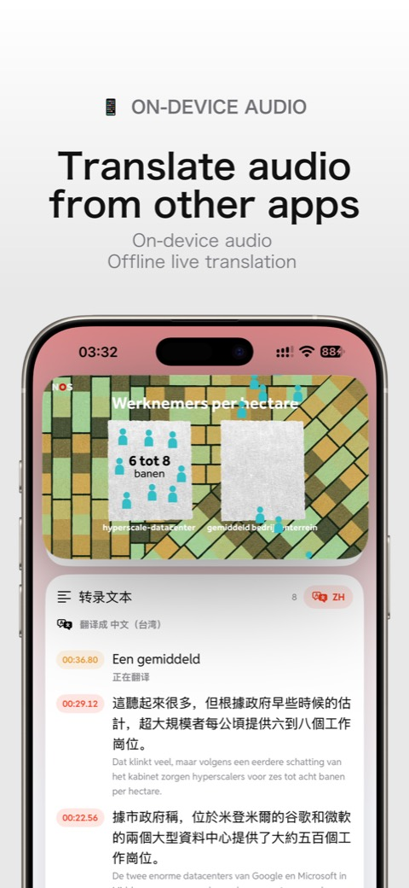
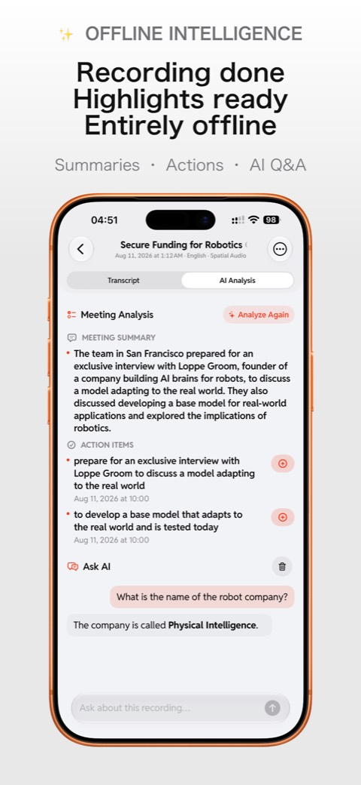

How speech becomes text — on an iPhone, offline.
What eight on‑device speech models actually compute: from PCM samples to log‑Mel frames, tokens, timestamps and speaker labels. Shown through LiveTranscriber, the app I build.
Follow live. Finish offline.
Two latency budgets mean two different model families, and both run on the phone. Live captions must commit in about a third of a second. The final record can afford full context, timestamps and speaker labels.
While you record
budget ≈ 320 ms / step · streaming stateAfter you stop
full context · seconds to minutesModels never hear sound. They read log‑Mel frames.
The mic delivers 48 kHz stereo. Every model wants 16,000 Float32 samples per second.
25 ms windows, hopping every 10 ms, give 100 spectra per second.
80 bins (Whisper) or 128 (Nemotron, Qwen3‑ASR, Whisper large‑v3). The bins are spaced like the cochlea: dense at low frequencies, sparse at high ones.
Conformer or Transformer blocks learn context: convolution captures local patterns, attention captures the whole utterance.
Similar encoders, four ways to decode
RNN‑T transducer
“emit a token, or advance”Blank means “nothing new in this frame”. Naturally streaming.
TDT transducer
“emit a token and skip Δt”Predicts a duration too, so it skips frames and gets word timings for free.
Encoder–decoder
“cross‑attend, then autoregress”Control tokens choose the language and task. Timestamps are tokens too.
Audio‑LLM
“audio as tokens in a prompt”A projector maps audio into the LLM's token space; then it's plain next‑token prediction.
Apple SpeechAnalyzer
A system black box: no app‑side tokens. You get partial → revision → final results with timing.
Sortformer · Community‑1
Diarization models output no text at all, only who × when. More on that in two slides.
At every frame: emit a token, or move on
RNN‑T: blank advances time
⟨blank⟩ = go to the next frame, add nothing. A BPE token (▁Meet, ing) is appended and fed back, and the same frame is tried again. Calls = T + U.
TDT: predict the jump, too
Each call also picks how many frames to skip: far fewer calls, and the jumps add up to word timestamps.
Cache‑aware streaming Nemotron 3.5 · 0.6B
Only the newest 320 ms is computed. Each layer caches attention K/V and conv state, so cost per step stays flat, even 2 hours into a meeting.
One token at a time, conditioned on all of the audio
Speaker models output who and when, never words
Sortformer · live
streaming · 4 speakersPer‑frame sigmoid P(Sk | t) for four speaker slots. The slots are ordered by arrival time, which removes the permutation ambiguity. An arrival‑order speaker cache keeps S1 as S1 across chunks.
Labels attach to whichever live ASR is running; it never decides any words.
Pyannote Community‑1 · offline
Core MLThe LLM reads the transcript, never the audio
Once the text is final, a small local model writes the title, summary and tags. Apple Intelligence is used when the device has it. Everyone else (including China‑region iPhones) gets a GGUF model running through embedded llama.cpp.
S1We'll launch the beta next Friday,
S2then review early feedback after the first week.
S1Can you own the TestFlight notes?
Making it fit on a 6 GB iPhone
| Model | Job | Weights | Runtime |
|---|---|---|---|
| Live | |||
| Apple SpeechAnalyzer | streaming ASR | system | Speech.framework |
| Nemotron 3.5 Streaming | cache‑aware RNN‑T | 0.6B · INT8 | Core ML |
| NVIDIA Sortformer | 4‑speaker diarization | streaming | Core ML |
| Offline | |||
| Parakeet TDT V3 | ASR + word timing | 0.6B · INT8 | Core ML |
| Pyannote Community‑1 | offline diarization | pipeline | Core ML |
| Qwen3‑ASR + Silero VAD | audio‑LLM ASR | 0.6B · 4‑bit | MLX |
| MOSS Transcribe‑Diarize | ASR + speakers | 4‑bit · ~1 GB | MLX |
| Whisper tiny → large‑v3 | encoder–decoder ASR | 39M–1.55B · Q5_0 | whisper.cpp |
| Text | |||
| Qwen3.5 2B / LFM2.5 1.2B | title · summary · tags | GGUF Q3_K_M / Q4_K_M | llama.cpp |
- Quantize everything: INT8 Core ML, 4‑bit MLX, Q5_0 and K‑quants. Memory, not FLOPs, is the real budget.
- Models ship as Apple‑hosted on‑demand asset packs (Background Assets): pinned upstream revisions, SHA‑256 verified, downloaded only when you choose a model.
- One shared domain layer for iPhone, Watch and a native Mac app that captures any meeting window via ScreenCaptureKit.
LiveTranscriber
A local‑first recorder for iPhone, with a native Mac companion. Every model on the previous slides is one tap away inside the app.





demo
Works in airplane mode: everything you'll see runs on the phone.
- Partial → finallive text rewrites itself as context arrives
- Speaker chips appearSortformer tags turns while I talk
- Dynamic Islandtranscript follows me to the Lock Screen
- Re‑transcribe offlineParakeet V3 + Community‑1: word timestamps and speakers
- One‑tap local summarya 2B LLM, on device
Take the slides with you
Every widget here is live: try the mic spectrogram and the lattice on your phone.